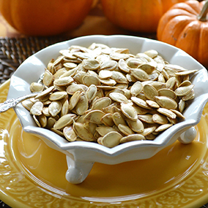

Pumpkin Seeds

Roasted pumpkin seeds can be considered the seasonal snack of fall, delicious, with a savoury taste! You may have even grown up making them right after carving your Halloween pumpkin, separating the seeds from all of those orange slimy pumpkin innards. I'm here to tell you how to make this simple fall snack! It is the perfect tasty treat when you just need something small and can be shelf stable for the whole season so if you don’t get through it all, no worries, you have plenty of time to devour them!
Now while this recipe says to season your seeds with salt, it is really up to you, many other seasonings could be substituted and added in for your unique flavour preferences! This recipe should yield about 4 servings. Be sure to enjoy it!
Ingredients
- 1 cup raw pumpkin seeds
- 1 tablespoon olive oil
- 1/2 teaspoon salt
Instructions
- Preheat oven to 300°F (150°C). Line a baking sheet with parchment paper.
- Rinse the pumpkin seeds in a colander under cold water to remove any pulp or strings. Pat them dry with a paper towel.
- In a bowl, toss the seeds with olive oil, and salt.
- Spread the seeds in a single layer on the prepared baking sheet.
- Bake for 20-30 minutes, flipping them around occasionally, until the seeds are golden brown and crispy.
- Remove from the oven and let them cool completely before serving.
- Enjoy your homemade snack!